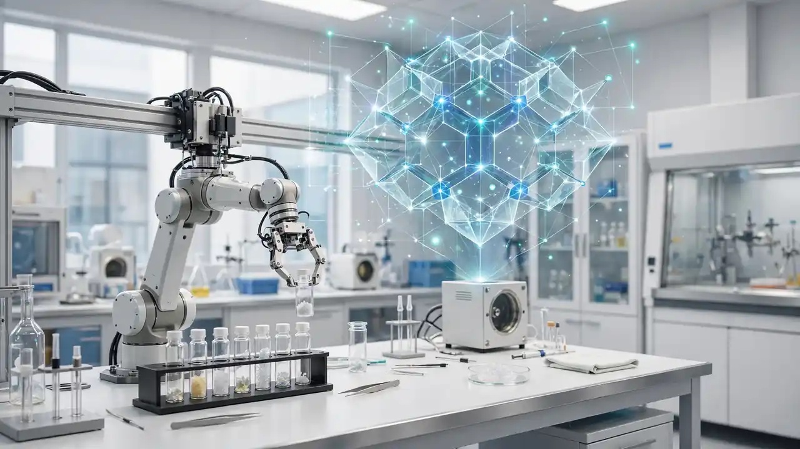

Matter Machine raises £4M: Liverpool's AI materials-discovery spin-out lands Oxford Nanopore's co-founder
Matter Machine, an AI-driven materials discovery spin-out from the University of Liverpool, closed an oversubscribed £4 million pre-Series A on October 12, 2026 — the largest raise by a newly formed Liverpool spin-out — and brought in Oxford Nanopore co-founder Dr Gordon Sanghera to lead commercialisation.
Matter Machine, a University of Liverpool spin-out building AI-powered materials discovery, has closed an oversubscribed £4 million pre-Series A — the largest investment secured by a newly formed spin-out from the university. The round was led by London-listed science investor IP Group, with participation from Northern Gritstone, the University of Liverpool Enterprise Fund, Norrsken Evolve, LYVA Labs, and the Northern Universities Venture Fund managed by Parkwalk, IP Group's EIS fund management arm.
Matter Machine's platform targets a stubbornly physical problem: discovering and optimising inorganic crystalline materials. It combines deep experimental and materials-characterisation expertise with AI prediction — world-leading materials chemistry, automated experimentation and machine learning, in the university's telling — to cut the time and cost of innovation across energy, catalysts and advanced manufacturing.

The Sanghera hire is the signal
The money is one signal; the personnel move is louder. As part of the round, Dr Gordon Sanghera CBE — co-founder and former chief executive of Oxford Nanopore Technologies, the British biotech giant — has joined Matter Machine to lead its commercialisation strategy. Sanghera said the company brings together "exceptional scientific expertise, unique technology capabilities and a highly scalable commercial opportunity."
IP Group chief executive Greg Smith said the University of Liverpool's AI-powered discovery work "could dramatically shorten the time required to develop new materials" — the entire thesis in one line. Sharecast noted IP Group shares ticked up on the news.
Why it matters
This is the AI-for-science playbook at university scale. Deep experimental chops (the Materials Innovation Factory, where Matter Machine is based) plus machine-learning prediction, financed by the UK's most active university-spin-out investor, staffed by an executive who has taken British science from lab to listing before.
The money will expand Matter Machine's technical and commercial teams, further develop the discovery platform, and push engagement with commercial partners across multiple sectors — with an eye on energy and sustainability needs over the next decade. If the platform works as advertised, the £4 million will look cheap; like every AI-for-science bet, the proof is in the next material it actually finds.
Sources: University of Liverpool, Oct 12, 2026; Reuters / IP Group RNS; Prolific North; TickStock.